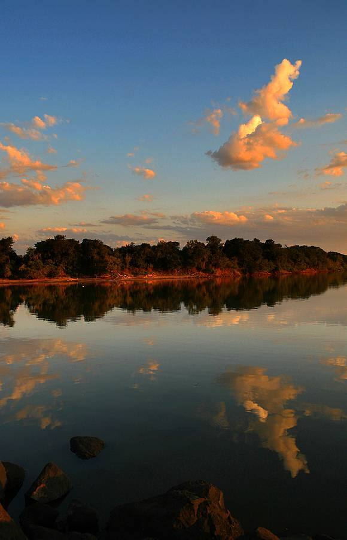
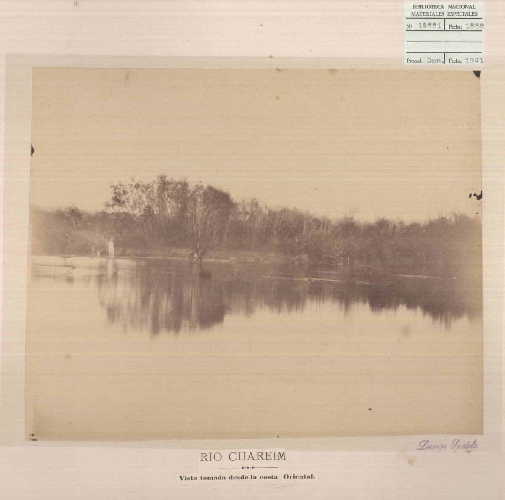

El norte del norte
El río Cuareim marca el límite con Brasil a lo largo de todo el norte del departamento. En su recorrido dibuja una curva que sube hacia el norte, y el extremo de ese codo es el punto más septentrional del país.
Más al oeste, el mismo río desemboca en el río Uruguay junto a Bella Unión, donde se encuentran Uruguay, Argentina y Brasil.
Antes de ir
No es un parque ni un sitio con servicios: es un punto geográfico en zona rural, junto al río y entre establecimientos de campo. Si querés acercarte, averiguá antes por los caminos y pedí permiso en los predios.
Fotos

Foto: Montecruz Foto · CC BY-SA 2.0 · Foto de referencia

Foto: Lorenzo Spátola (Biblioteca Nacional de Uruguay) · Dominio público · Foto de referencia